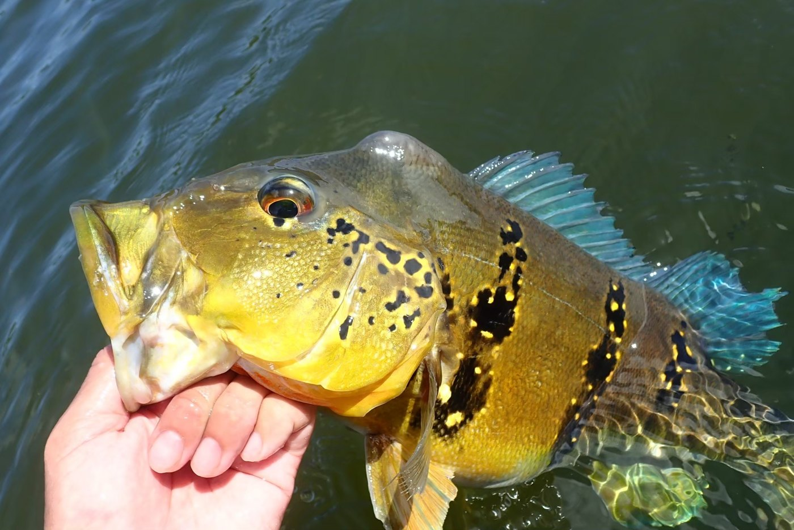
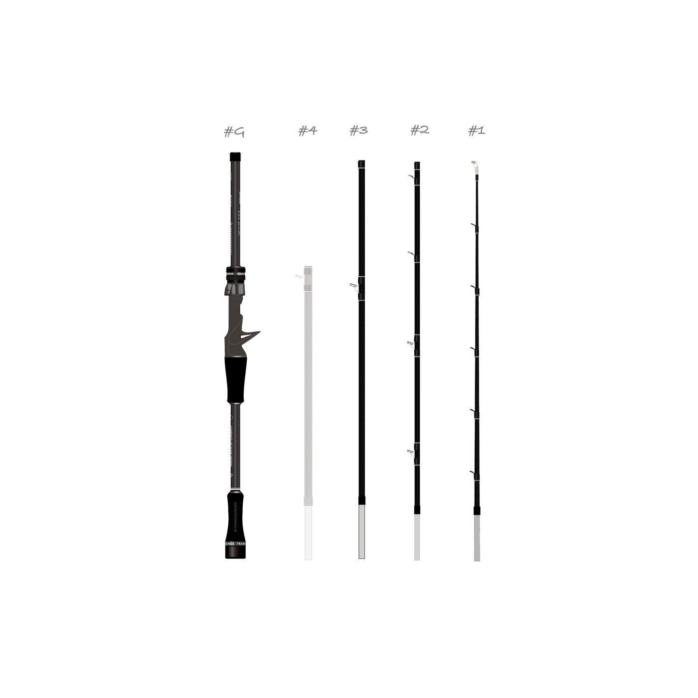
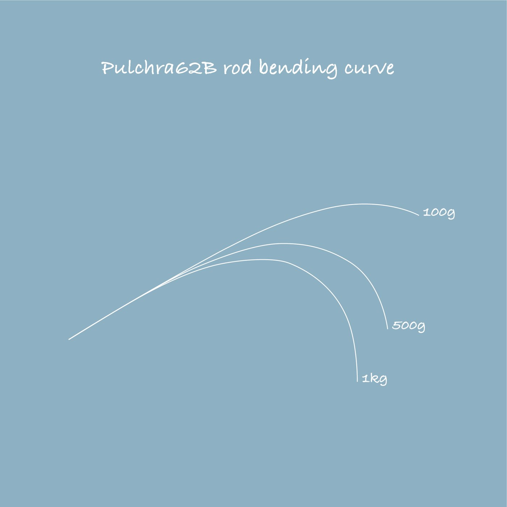
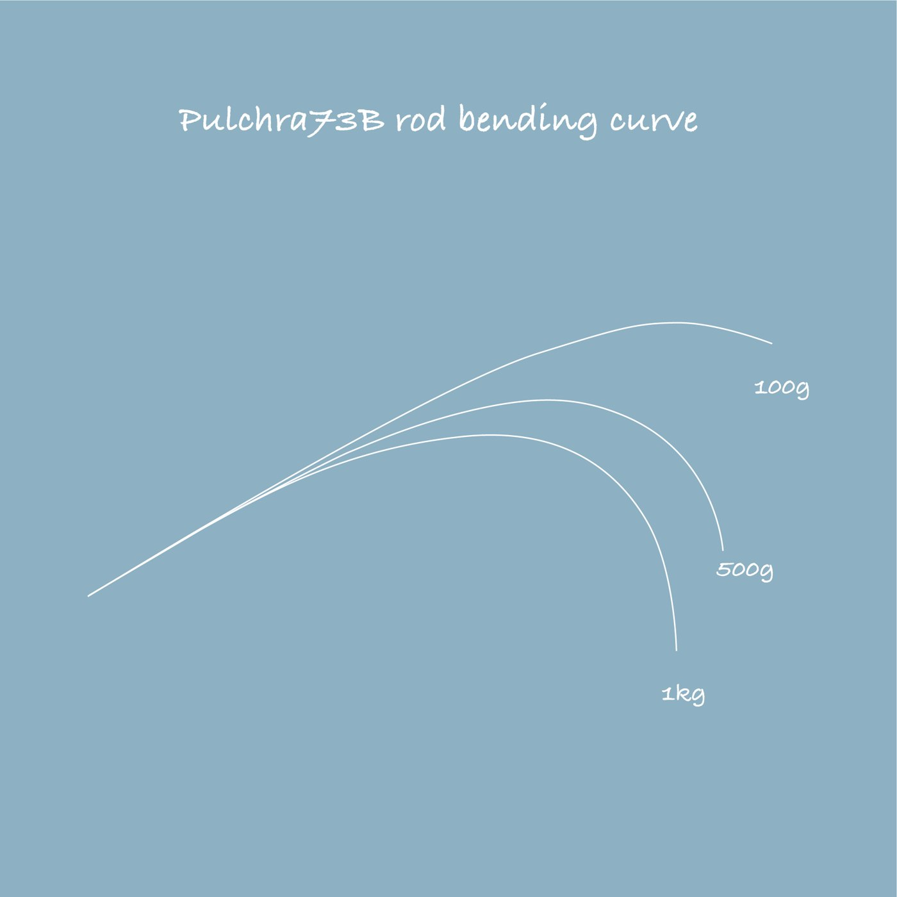
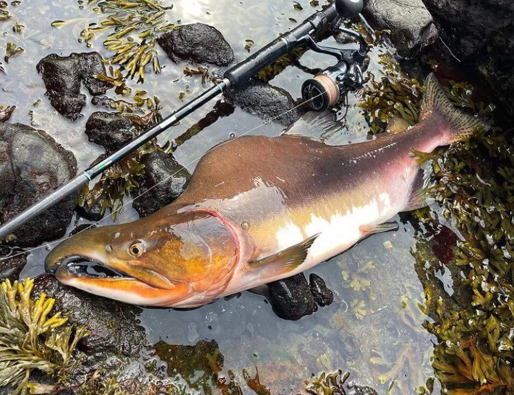
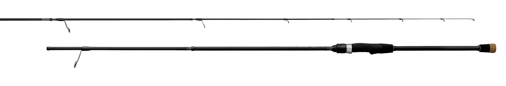
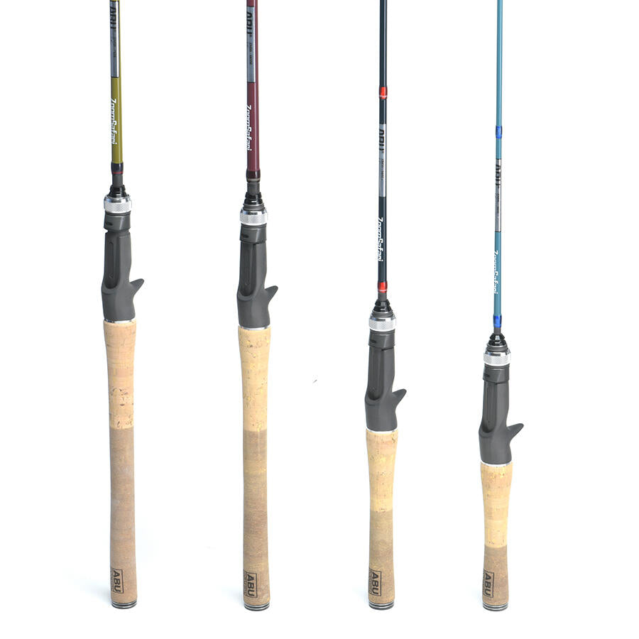

プルクラ62B+
（Pulchra62B+ Rev2.0）
プルクラ62B+は、パックロッド専門ブランドTRANSCENDENCE（トランスセンデンス）の、ベイトのバーサタイルロッドです。
キャッチコピーは「操る、感じる、曲がる、止まる」。国内外のオカッパリ・ボート、川・湖・海と、場所を選ばず小さなルアーから少し大きなルアーまで投げられます。ティップはMLクラスなのにバットはH〜XHクラスという、マルチピースならではのテーパーで、仕舞寸法は525mmです。

画像出典:TRANSCENDENCE公式HP
※画像はピーコックバスの釣果（公式HPより）。
スペック
- メーカー
- TRANSCENDENCE（トランスセンデンス）
- 開発
- 片山正顕・Yusuke TAKADA
- タイプ
- ベイトロッド（バーサタイル・2in1可変レングス）
- 長さ
- 6.2ft／7.3ft
- 継数
- 6.2ftは4ピース、7.3ftは5ピース（#4を追加）
- 仕舞寸法
- 525mm
- 自重
- 115〜139g
- ルアー重量
- 5〜28g（最大56g）
- PEライン
- 0.8〜3号
- ブランク
- 4軸高弾性カーボン
- ガイド
- チタントルザイトのシングルフット（先端から7つ）＋チタン・SiC
- グリップ
- 可変フレキシブルグリップ（バランサーウェイト付き）
- 価格
- 66,000円（税込）
▼今すぐチェック

プルクラ62B+の特徴
操る、感じる、曲がる、止まる。持ち運べる「究極のバーサタイル」
-
ティップML・バットH〜XHのテーパー
気持ちファースト寄りのミディアムテーパーで、軽いルアーを飛ばしてバイトを弾かないティップ、追従してフッキングを助けるベリー、120cm級のタイメンや5kgクラスのトーマンのダッシュも止める強いバットを持つ。
-
曲がるのに復元力の高い4軸高弾性カーボン
「軽く、強く、曲がるのに高い復元力を持つ」4軸高弾性カーボンのブランク。バイトを弾かずに曲がり、復元力でオートマチックに掛けられる。
-
リーダーの抜けがよいチタントルザイトガイド
先端から7つのガイドに、チタンフレームのトルザイトリングのシングルフットガイドを採用。PE3号に40lbを超えて60lbまでのリーダーもスムーズに抜け、フロロカーボンの細かい振動も拾える。
6.2ftと7.3ftの使い分け
| 長さ | 組み合わせ | 得意な場面 |
|---|---|---|
| 6.2ft | #1+#2+#3+グリップ | 国内外のボートキャスティング、ピンスポットへのキャスト、トップウォーター・ミノー、東京湾シーバスのライトバーチカル、ライトロックフィッシュ |
| 7.3ft | #1+#2+#3+#4+グリップ（強いバットを追加） | オカッパリのストラクチャー攻め、琵琶湖などのビッグレイク、遠投が必要な場面。重いルアーも背負える |

画像出典:TRANSCENDENCE公式HP
6.2ft（100g・500g・1kg）と7.3ft（500g・1kg・2kg）の曲がり方です。7.3ftはバットが延びて、より重い荷重まで受け止めます。

画像出典:TRANSCENDENCE公式HP

画像出典:TRANSCENDENCE公式HP
※TRANSCENDENCE公式HPの記載より。別売りのオプションパーツ（ショートセクション・延長セクション・ロンググリップ・ショートグリップなど）を組み合わせると、4ft台から9.5ftまで、推奨18パターンの長さに変えられます。
プルクラ62B+の使い方
6.2ftは、ボートからのキャスティングや、狙ったスポットに正確に投げ込む釣りに向いています。クランクやスピナーベイトのただ巻き、ミノーのトゥイッチ、ペンシルのドッグウォーク、ライトテキサスなど、巻く・動かす・落とすをこれ1本で切り替えられるのが持ち味です。
7.3ftは、オカッパリでストラクチャーを攻めたり、ビッグレイクで遠投したりする長さ。推奨は5〜28gで、バットで56g級のビッグベイトも背負えます。
プルクラ62B+がおすすめの人
国内外の遠征に、1本で何でもこなせるベイトロッドを持って行きたい人におすすめです。
開発では国内外の数百匹の魚でテストされ、海外の怪魚から堤防の青物、冬の琵琶湖のバスまで対応しています。長さとパワーの違う2本分を、525mmのケースに収めて持ち歩けるのが最大の魅力です。
ワンポイント
グリップエンドのバランサーウェイトは、釣り方に合わせて調整できます。出荷時は7.3ftでも使えるように手前重心になっているので、ボートで6.2ftを使って前重心にしたいときは、バランサーのシンカーを1つか2つ抜くと、穂先の操作がしやすくなります（公式の案内より）。
プルクラ62B+に合わせたいリール
PE0.8〜3号・推奨5〜28gのベイトロッドなので、軽い〜中くらいの重さのルアーを投げやすい、70〜100番クラスのベイトリールが合います。遠征先の風の中でも投げやすいよう、ブレーキ性能の高いモデルがおすすめです。
| リール | 合わせたい理由 |
|---|---|
| シマノ 24メタニウムDC（ハイギア） |
DCブレーキで、向かい風でもバックラッシュしにくい。巻き物からテキサスまで1台でこなせる。 |
| ダイワ ジリオン SV TW 100（ハイギア） |
軽めのルアーでもバックラッシュしにくい、ダイワのSVコンセプトのベイトリール。 |
※リールの重さ・糸巻量・ドラグはメーカーの公表値です。最新のラインナップは各メーカーの公式サイトで確認してください。
▼今すぐチェック
プルクラ62B+とあわせてチェックしたいアイテム
-

カレンテス82S+ TRANSCENDENCE 詳細はこちら＞同じブランドのスピニング。8.2ft/9.8ftの2in1で、シーバスを狙うならこちら。
-

ラグゼ パックスタイル A3 がまかつ 詳細はこちら＞A3サイズに収まるパックロッド。ベイトモデルのB70XHもある。
-

ズームサファリ アブガルシア 詳細はこちら＞もっと気軽に、エサでもルアーでも楽しむならこちら。ベイトモデルも4機種。